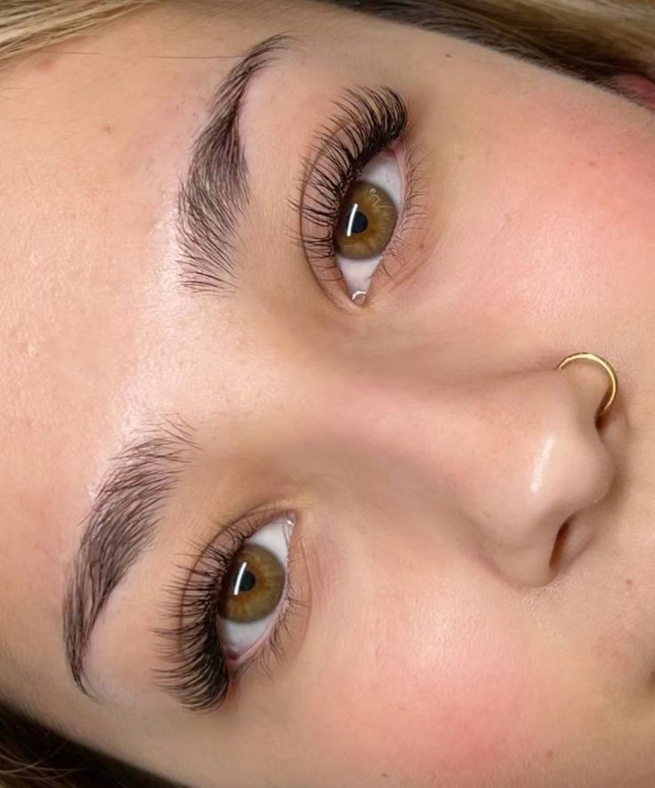
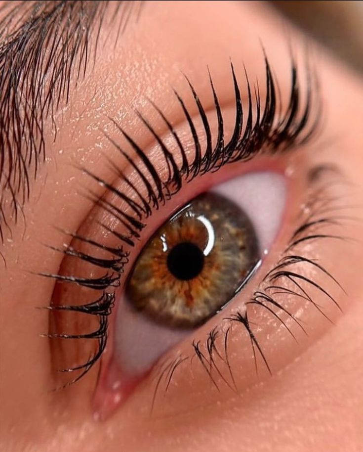
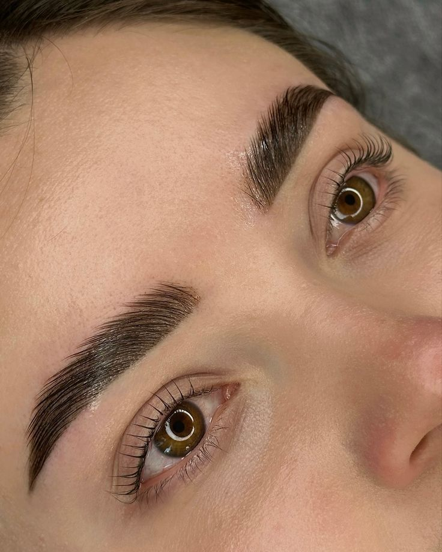

Doğal, zarif ve unutulmaz bir görünüm için.
Göz yapınıza ve yüz hattınıza en uygun formu ekiplerimizle belirliyoruz.
Steril ortamda kirpik ve kaşlarınızı işleme hazır hale getiriyoruz.
En kaliteli materyallerle hayalinizdeki bakışlara kavuşturuyoruz.

Tek tek uygulanan ipek lifleri ile kirpiklerinize doğal bir hacim katıyoruz. Göz yapınıza göre Classic, Volume veya Mega Volume seçenekleri sunuyoruz.
Kısa ve seyrek kirpiğe sahip olanlar, sabahları makyaj süresinden tasarruf etmek isteyenler için mükemmeldir.

Kendi kirpiklerinizi vitamin bakımıyla kökten uca kıvırıyor ve belirginleştiriyoruz. Kimyasal içermeyen, besleyici bir işlemdir.
Kendi kirpiği uzun olup düşük duranlar ve doğal bir kıvrım arayanlar için idealdir.

Kaş formunu yukarı yönde sabitleyerek daha dolgun ve düzenli bir ifade sağlıyoruz. Kaş botoksu ile birleştirilerek kaşları besler.
Sert kaş yapısına sahip olanlar, boşluklu veya aşağı doğru düşen kaş şikayeti olanlar için harikadır.
Su ile temastan kaçının ve buhara maruz kalmayın.
Makyaj temizlerken yağ bazlı temizleyiciler kullanmayın.
Gözlerinizi ovuşturmayın ve kirpiklerinizi çekiştirmeyin.
Size hediye edeceğimiz fırça ile her gün nazikçe tarayın.
Kaş Tasarım & Mikroblading Uzmanı
Kirpik Tasarım & Lifting Uzmanı
Randevunuzu oluşturun, değişimi birlikte başlatalım.
Hemen Randevu Al